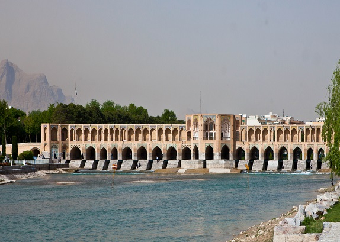

<div class="wrap">
<div class="container_old">
  <br />
  <h2 class="tieude">Top Oldest Bridges</h2>
  <br />
  
  <div class="sub_old">
    <div class="sub_old-test1">
      <a href="#!alca" class="home_long-a">
      <h3>Alcantara Bridges</h3>
      </a>
      
    </div>
    <div class="sub_old-test2">
      <p>
        The Alcantara Bridge has suffered more damage from war than from the
        elements over the years. The Moors destroyed one of the smallest arches
        in 1214 although this was rebuilt centuries later, in 1543, with stone
        taken from the original quarries. The second arch on the northwest side
        was then later destroyed in 1760 by the Spanish to stop the Portuguese
        advancing and was repaired in 1762 by Charles III, only to be blown up
        again in 1809 by Wellington's forces attempting to stop the French.
        Temporary repairs were made in 1819, but much of the bridge was
        destroyed yet again in 1836 by the Carlists. The bridge was rebuilt in
        1860 using mortared masonry.[6] And following completion of the José
        María de Oriol Dam, which allowed for the draining of the Tagus
        riverbed, the main pillars were completely repaired in 1969.
        <a href="#!alca">[see more...]</a>
      </p>
    </div>
  </div>
  <hr />
  
  <div class="sub_old">
    <div class="sub_old-test1">
      <a href="#!pons" class="home_long-a">
      <h3>Pons Fabricius Bridges</h3></a>
      
    </div>
    <div class="sub_old-test2">
      <p>
        According to Dio Cassius, the bridge was built in 62 BC, the year after
        Cicero was consul, to replace an earlier wooden bridge destroyed by
        fire. It was commissioned by Lucius Fabricius, the curator of the roads
        and a member of the gens Fabricia of Rome. Completely intact from Roman
        antiquity, it has been in continuous use ever since. <br />The Pons
        Fabricius has a length of 62 m, and is 5.5 m wide. It is constructed
        from two wide arches spanning 80 feet, supported by a central pillar in
        the middle of the stream. The arches of this bridge are the first ones
        on any Roman bridge that were not semi-circular. This is possibly caused
        by the semi-circle being located below the water line. Its core is
        constructed of tuff. Its outer facing today is made of bricks and
        travertine. A relief is located 20 feet above the pier. During times of
        flood, this relief served as an additional waterway.<a href="#!pons"
          >[see more...]</a
        >
      </p>
    </div>
  </div>
  <hr />
  
  <div class="sub_old">
    <div class="sub_old-test1">
      <a href="#!khaju" class="home_long-a">
      <h3>Khaju Bridges</h3>
      </a>
      
    </div>
    <div class="sub_old-test2">
      <p>
        The Khaju Bridge was built around 1650, under the reign of Abbas II, the
        seventh Safavid king (shah) of Iran, on the foundations of an older
        bridge. The existing inscriptions suggest that the bridge was repaired
        in 1873. There is a pavilion located in the center of the structure,
        inside which Abbas II would have once sat, admiring the view.Today,
        remnants of a stone seat is all that is left of the king's chair.<a
          href="#!khaju"
          >[see more...]</a
        >
      </p>
    </div>
  </div>
</div>
</div>